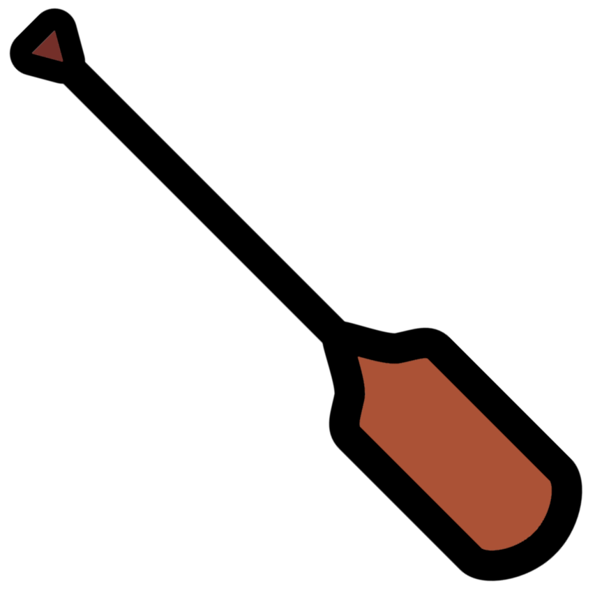

15 Logical operators

In this chapter you will learn how to use 2 different logical operators:
andor
With these statements you will:
- Filter reads by GC% ranges.
- Detect the presence of 1 or more amino acids.
This will further solidify your use of loops and conditions.
Use a new notebook called "06-Logical_statements". Add the following code to the top of this notebook to load the required library.
Note: Ensure wd = is set to your working directory (not nsc201).
15.1 and logical operator
We will first look at the and logical operator.
This allows us to compare two comparisons.
If both are True the conditional statement will return as True.
If either/both are False the conditional statement will return as False.
Lets show a few examples.
First create a few demonstration variables.
num_list = [1,2,3,4,5,6,7,8,9]
string_list = ["one","two","three","four","five","six","seven","eight","nine"]Print numbers between 3 and 7.
#Loop through numbers
for num in num_list:
#If number is greater than 3 and less than 7
if num > 3 and num < 7:
#Print number
print(num)Print numbers divisible by 2 that are also greater than 5.
#Loop through numbers
for num in num_list:
#If number is divisible by 2 and greater than 5
if num%2 == 0 and num > 5:
#Print number
print(num)Print strings longer than three characters and has at least on letter e.
#Loop through strings
for string in string_list:
#If string length is greater than 3 and the "e" count is greater than 0
if len(string) > 3 and string.count("e") > 0:
#Print the string
print(string)Print strings shorter or equal to 3 characters and that have no e.
#Loop through strings
for string in string_list:
#If string length is less than or equal to 3 and the "e" count is 0
if len(string) <= 3 and string.count("e") == 0:
#Print the string
print(string)In the above examples we have only used one and operator. You can use multiple but of course the more you use the more complex your statement becomes.
15.2 Filter by GC% range

With the and logical operator we can filter by a GC% range.
The next bit of coding will retain reads with a GC% between 40% and 60%. This is not normally something you would do but instead we've included it for demonstrative purposes.
#Read in the fastq data
R_undulata_data = SeqIO.parse(wd + "/R_undulata_WGS.fastq", "fastq")
#Initialise an empty list to hold the records that we want to keep
gc_sequences = []
#Variables for choice of min and max gc%
min_gc = 40
max_gc = 60
#Loop through the fastq records
for record in R_undulata_data:
#Calculate GC%
gc_count = record.seq.upper().count("G") + record.seq.upper().count("C")
gc_perc = (gc_count / len(record.seq)) * 100
#If GC percent is greater than min and less than max
if gc_perc > min_gc and gc_perc < max_gc:
#Add the record to the list of records
gc_sequences.append(record)
#Print statement to show number of reads retained after length filtering
print("Found " + str(len(gc_sequences)) + " reads with GC% range between " +
str(min_gc) + "% and " + str(max_gc) + "%.")Ensure you understand the above code before continuing. Please ask a demonstrator if you are unsure.
15.3 or logical operator

For this we will use the or logical operator. This allows us to test two comparisons and if the first or second is True the condition will return the output. Lets go through a few examples.
We will use the same variables as our and operator examples.
num_list = [1,2,3,4,5,6,7,8,9]
string_list = ["one","two","three","four","five","six","seven","eight","nine"]Print numbers greater than 4 or if they are odd.
#Loop through numbers
for num in num_list:
#If number is greater than 4 or odd
if num > 4 or num%2 == 1:
#Print number
print(num)Print numbers less than or equal to 2 or greater than or equal to 8.
#Loop through numbers
for num in num_list:
#If number is less than or equal to 2 or greater than or qual to 8
if num <= 2 or num >= 8:
#Print number
print(num)Print strings shorter than 4 characters or longer than 4 characters.
#Loop through strings
for string in string_list:
#If string length is less than or greater than 4
if len(string) < 4 or len(string) > 4:
#Print the string
print(string)Print strings with an n count of more than 1 or an e count of 0.
15.4 Amino acid detection

In this part you will translate part of each sequence with .translate().
Then you will count the number of sequences that have at least one translated Glutamine (Q) or Serine (S).
This will be carried out with the or logical operator.
When translating the sequence length needs to be divisible by three to match codon lengths. We will only translate the first 10 codons (30 bases) to check.
#Read in the fastq data
R_undulata_data = SeqIO.parse(wd + "/R_undulata_WGS.fastq", "fastq")
#Initialise a variable for the counter
counter = 0
#Variables for amino acids
aa_1 = "S"
aa_2 = "Q"
#Loop through the fastq records
for record in R_undulata_data:
#If condition so we only analyse reads that are 30bps or longer
if len(record.seq) >= 30:
#Extract the first 30 bases
subset_seq = record.seq[:30]
#Translate sequence
aa_seq = subset_seq.translate()
#Amino acid counts
aa_1_count = aa_seq.upper().count(aa_1)
aa_2_count = aa_seq.upper().count(aa_2)
#If aa_1 is present or aa_2 is present
if aa_1_count > 0 or aa_2_count > 0:
#Add 1 to counter
counter = counter + 1
#Print statement to show number translated sequences with either of the amino acids
print("Found " + str(counter) + " reads with a translated " +
aa_1 + " or " + aa_2 + " in the first 10 codons.")15.5 Logical operators reflection

Excellent! You have learnt how to use the and and or logical operators.
You now have a good tool kit to carry out a lot of different python coding and be able to learn more yourself.
We'll finish this book with some challenges to give you practice with all you have learnt.